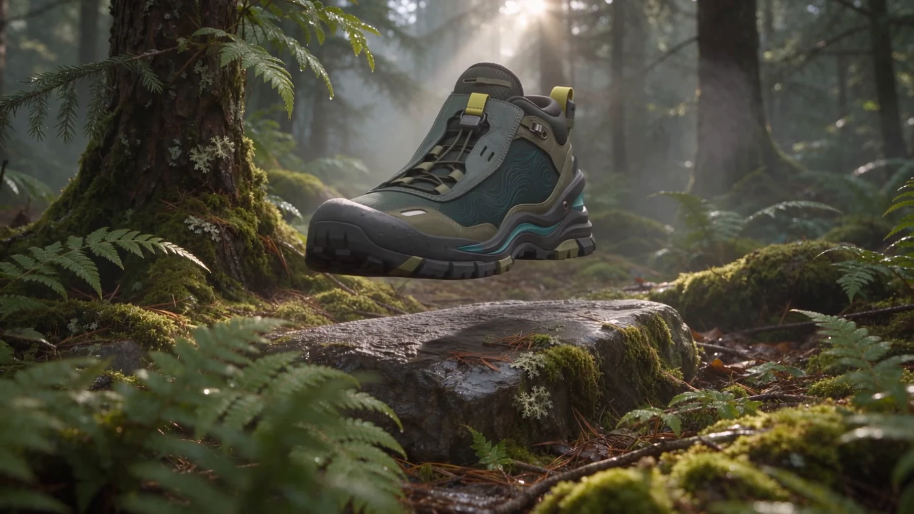
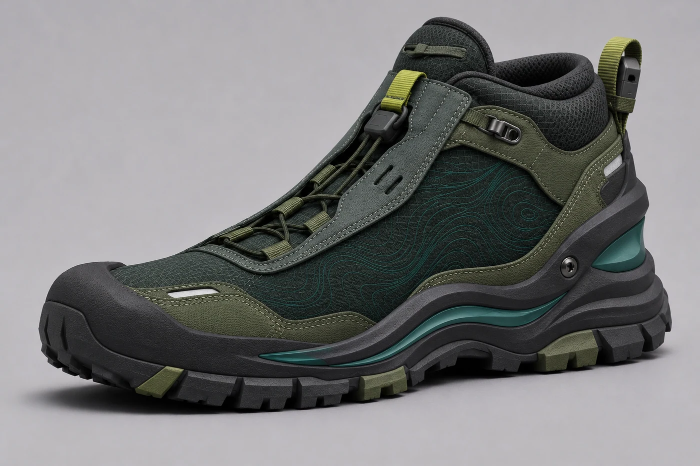
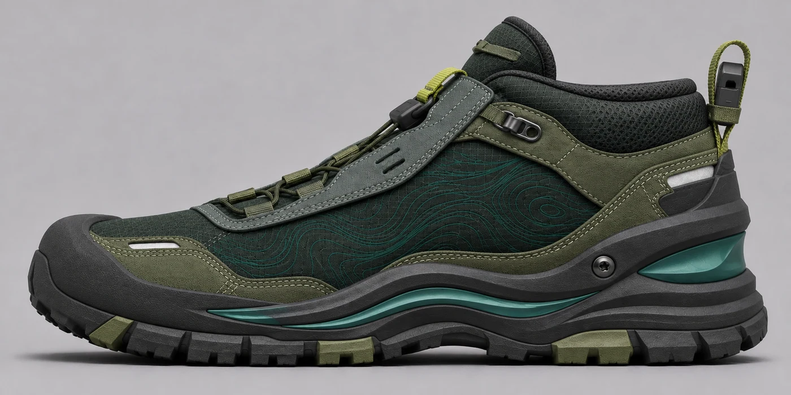
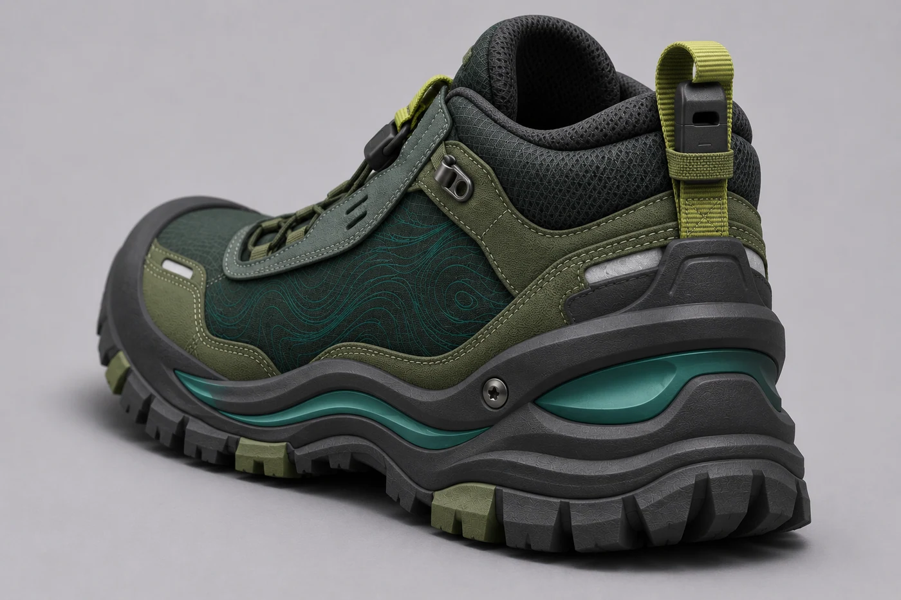
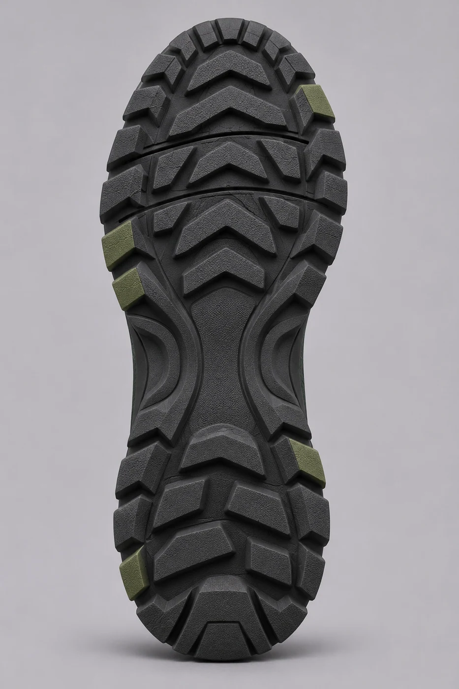
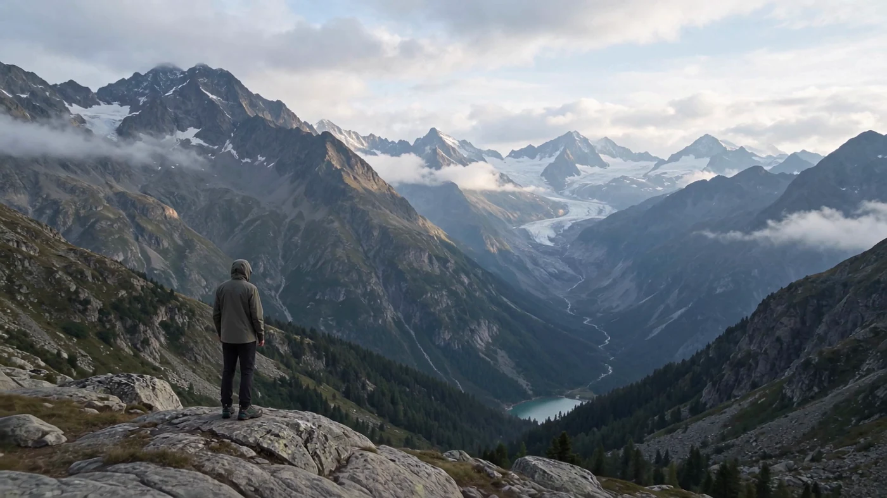
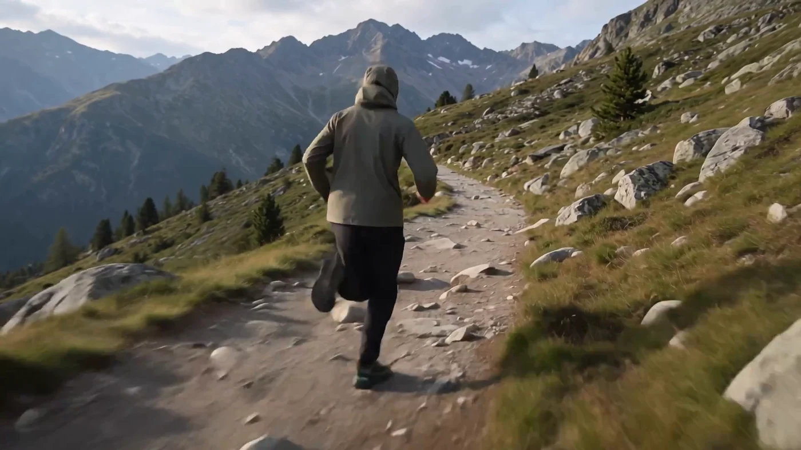

Restrain the design
The concept moved from overtly cyberdelic styling toward a forest palette and fewer visible technical details. The reference set made that selected direction concrete.

A cinematic landscape film and a tighter portrait cut, shaped for different ways of watching.
The film / The View
A hiker reaches a lookout obscured by fog. Attention shifts to the textures underfoot, then outward again—to movement, open terrain, and the shoe that connects the visual story.
The brief
I developed a fictional expedition shoe into a cohesive launch concept, carrying its visual identity from design exploration through product imagery, cinematic footage, and two final edits.
The challenge was continuity: the silhouette, materials, and forest palette needed to remain recognizable as the product moved between viewpoints, environments, and formats.
Pine ripstop, olive reinforcement, charcoal rubber, and a restrained mineral-teal contour.




Custom AI workflow
Each stage had a different job. Approved references connected them, with selection and review between generation steps.
Refine the product’s form, palette, materials, and details. Develop alternate views to guide later compositions and check the shoe’s identity.
Use Seedream 5.5 through Higgsfield to create character and environment keyframes. Keep clothing, footwear, lighting, and scale explicit in the direction.
Generate controlled actions and camera moves with Kling 4.0, while reusing suitable earlier Seedance 2.5 footage. A step, a pause, or a product turn carries one clear beat.
Assemble with Python and FFmpeg, refine color and transitions, and combine an ElevenLabs Music score with selected original footstep audio.
Reframe the portrait cut around the moving subject. Create a new vertical hero to preserve the whole shoe, then inspect continuity, framing, audio, and final exports.


Iteration continued through the edit, the transition checks, and the portrait adaptation.
The concept moved from overtly cyberdelic styling toward a forest palette and fewer visible technical details. The reference set made that selected direction concrete.
The final landscape edit removes all added text, softens selected cuts, and introduces a five-second hovering product reveal that continues the forest setting.
The reel reuses 25 seconds of footage. Tracking crops preserve the moving subject; a new five-second portrait hero gives the complete shoe room to turn.
Review frames and transitions for deformation, duplicate objects, continuity, and clipping. Verify duration, resolution, frame count, audio, and the decoded final frame.
Both edits are text-free, with native playback above and export files below.
60 seconds · 1920 × 1080 · 24 fps
30 seconds · 1080 × 1920 · 24 fps
Selected references, prompt examples, edit plans, and assembly scripts.
The supporting files document the workflow. The source clip and music library is not included; final films are available separately above.
This is a self-initiated concept for a fictional shoe. The product images explore design intentions; no physical prototype or footwear performance testing was undertaken.